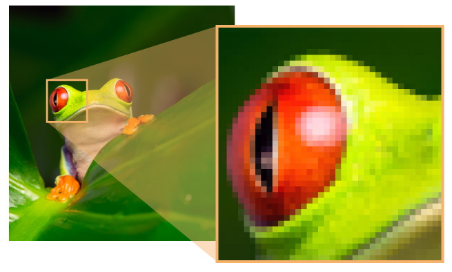
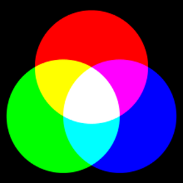
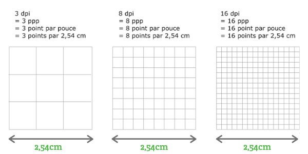
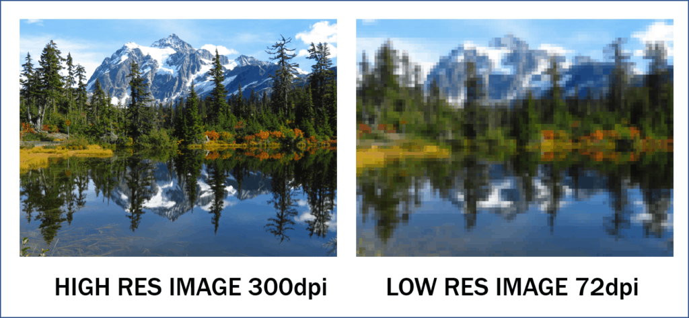

Les images numériques sont des "fichiers" électroniques crées,acquis,traités et stockés sous forme numérique.Ces images peuvent être acquises par des dispositifs comme les scanners,les appareils photo ou les smartphones à partir d'une situation analogique (papier,scène réelle...).Elles peuvent également être créées de toute pièce à partir d'un ordinateur ou d'une tablette graphique.Il sera facile dans tous les cas de modifier ces fichiers avec des logiciels spécialisées.Il existe deux types d'images numériques : les images matricielles et les images vectorielles .D'un point de vue mathématique, une image matricielle est composée d'un tableau de points(pixels).Ces points peuvent être en noir et blanc, en niveaux de gris ou en couleur.D'un point de vue de l'utilisateur non spécialiste,la caractéristique fondamentale d'une image matricielle est de représenter le plus fidèlement possible la réalité. On peut représenter fidèlement la réalité en prenant des photos avec un appareil photo numérique ou encore avec un smartphone.

Image matricielle avec un zoom sur l'image
Quand on observe un pixel "à la loupe", on peut constater que le pixel est bien constitué de trois parties : une partie rouge, une partie verte, et une partie bleue (voir schéma ci-dessus).Quand on regarde une image sur un écran d'ordinateur,on voit des pixels de différentes couleurs (jaune, mauve,...) et pas des pixels constitués de rouge, de vert et de bleu car c'est dû à une limitation de l'oeil : son pouvoir séparateur.
pixels
Contrairement aux images matricielles,les images vectorielles sont le plus souvent créées sans rapport avec la réalité.Elles sont le plus souvent utiliséées pour représenter des logos.
image vectorielle
Voici un lien comme exempleLa synthèse additive des couleurs
Une image en couleur est constituée de pixels qui possédent 3 couches:une composante Rouge(R),une composante Verte(V) et une composante Bleue(B).Cela résulte de la synthèse additive des couleurs.On peut en effet définir toutes les couleurs à partir de ces 3 couleurs RVB(ou RGB en anglais).De façon classique,on définit 256 teintes(de 0 à 255)par composante,c'est à dire 8 bits pour le Rouge,8 bits pour le Vert et 8 bits pour le Bleu.On obtient donc une profondeur de bit de 24(3*8).
synthèse additive des couleurs
Quand vous regardez 2 points très proches l'un de l'autre, l'oeil "voit" deux points si l'angle α (voir le schéma ci-dessus) est supérieur à 0,017°. En dessous de cette valeur, votre oeil "superposera" les 2 points, il ne verra pas deux, mais un seul point.Un pixel est tellement petit que notre oeil superposera la partie rouge, la partie verte et la partie bleue du pixel, voilà pourquoi nous voyons des pixels de différentes couleurs.
Dans le systeme RVB(Rouge,Vert,Bleu),chaque couleur est définie par trois composantes:le rouge,le vert et le bleu mais chacune d'eux peut prendre 256 valeurs différentes,allant de 0 à 255.Pour connaitre le nombre total de couleurs possibles,on multiplie ces trois valeurs entre elles donc 256 * 256 * 256 = 16 777 216 ce qui fait qu'on obtient 16 777 216 de couleurs différentes que l'on peut représenter avec le système RVB.
La résolution d'une image est définie par un nombre de pixels par unité de longueur.Elle s'exprime clasiquement en ppp(point par pouce)ou dpi(dot per inch).1 pouce représente environ 2,54 cm.

La résolution est le plus souvent définie lors de la numérisation dans le but d'une impression(passage de la forme analogique à la forme numérique):la résolution dépend des caractéristiques du matériel utilisé lors de la numrisation.
La résolution d'une image numérique définit le degré de détail de l'image.Ainsi,plus la résolution est élevée,plus la qualité "visuelle" de la photo est élevée.
*
Plus on augmente la résolution,plus le nombre de pixels qui composent l'image est grand.Le nombre de pixels est proportionnel au carré de la résolution.
La résolution d'un écran d'ordinateur est de 72 ou 96 dpi.La résolution d'une imprimante gran public est de 300 dpi.La résolution d'une imprimante professionelle est d'au moins 600pi. Lorsqu'on numérise(scanne)une photo dans le but d'obtenir une photo numérique,il faut savoir à l'avance ce qu'on veut faire.